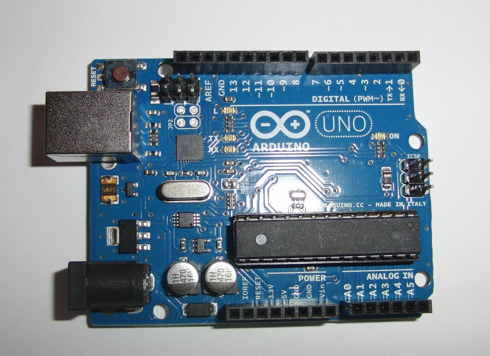
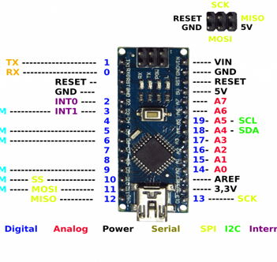

ARDUINO
Le 8 novembre 2014. Par : Guillaume, Jean-Luc L’Arduino est une plateforme de prototypage électronique open-source, basée d’une part sur du matériel et d’autre part sur un ensemble de logiciels faciles à utiliser. Destiné aux artistes, amateurs, designers, il trouvera entièrement sa place dans l’univers du train miniature. Il existe plusieurs cartes Arduino dont les caractéristiques sont plus ou moins riches. Le but de cet article introductif est de faire un panorama de l’existant. Chaque carte sera ensuite détaillée dans un article qui lui sera propre. La caractéristique première d’une carte Arduino est le type de MCU ou micro-contrôleur dont elle est équipée. Actuellement, et probablement pour encore longtemps, deux familles de micro-contrôleurs sont employées : des AVR 8 bits de la société ATMEL et des ARM 32 bits de la série Cortex-M, conçus par la société Advanced RISC Machines et fabriqués par différents fondeurs, ATMEL pour les cartes officielles mais aussi Freescale ou STMicro pour des cartes compatibles gravitant autour de la galaxie Arduino. Pour résumer rapidement, les cartes Arduino à base d’AVR sont plus simples et comportent moins de mémoire que les cartes à base d’ARM. Leur capacité de calcul est également plus faible mais elles sont généralement meilleur marché.
About Arduino

Arduino unoUne carte Arduino est une petite (5,33 x 6,85 cm) carte électronique équipée d'un micro-contrôleur.Le micro-contrôleur permet, à partir d'événements détectés par des capteurs, de programmer etcommander des actionneurs; la carte Arduino est donc une interface programmable. |

Arduino nanoLa carte Arduino Nano est basée sur un ATMega328 cadencé à 16 MHz. Sa mémoire de 32 kB et son grand nombre d'E/S font de ce circuit compatible DIL30 un élément idéal pour les systèmes embarqués ou pour des applications robotiques nécessitant du multitâches. La Nano 3.0 peut se programmer avec le logiciel Arduino. Le contrôleur ATMega328 contient un bootloader qui permet de modifier le programme sans passer par un programmateur. Le logiciel est téléchargeable gratuitement. |

Arduino megaLa carte Arduino Mega 2560 est basée sur un ATMega2560 cadencé à 16 MHz. Elle dispose de 54 E/S dont 14 PWM, 16 analogiques et 4 UARTs. Elle est idéale pour des applications exigeant des caractéristiques plus complètes que la Uno. Des connecteurs situés sur les bords extérieurs du circuit imprimé permettent d'enficher une série de modules complémentaires. Elle peut se programmer avec le logiciel Arduino. Le contrôleur ATMega2560 contient un bootloader qui permet de modifier le programme sans passer par un programmateur. Le logiciel est téléchargeable gratuitement. Cette carte est livrée avec un support en plastique mais sans cordon USB (voir articles conseillés). |
{kind=link}
{kind=link}